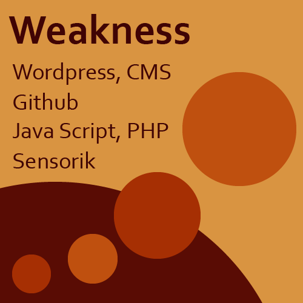
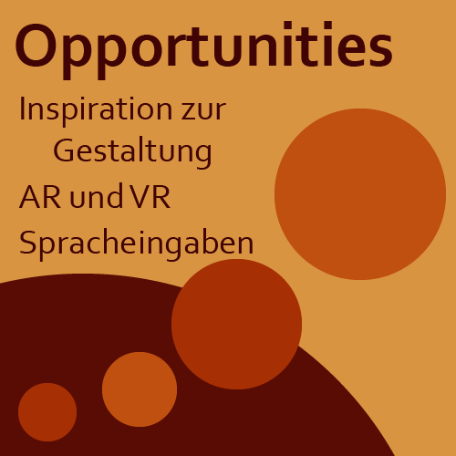
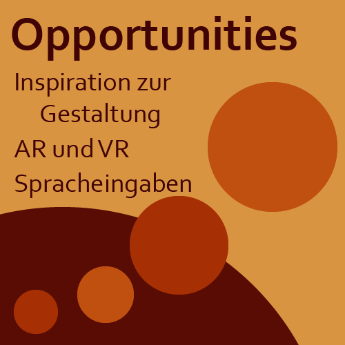
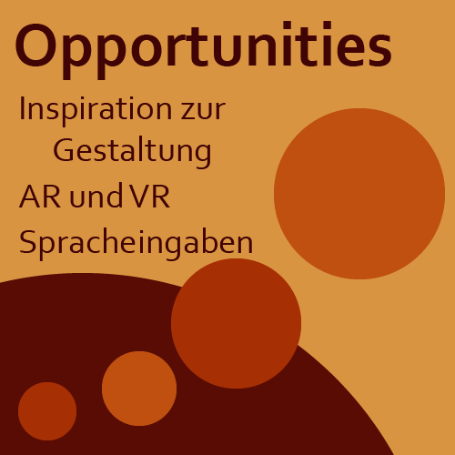

SWOT Analyse
Niclas OMB
Aufgabe: SWOT-Analyse zu Ihrer Person. Erstellen Sie eine SWOT-Analyse zu Ihrer Person im Kontext von diesem Kurs. Stellen Sie die SWOT-Analyse mit Medien Ihrer Wahl dar, nutzen Sie Medien / Techniken / … die sie schon gut beherrschen (das kann von einer Mircopage/Website, Audio-Arrangement, Videoclip bis hin zu einer analogen, eingescannten/abgefilmten Arbeit reichen. Seien Sie kreativ.
niclas9898.github.io/IFD-SoSe20/

 

